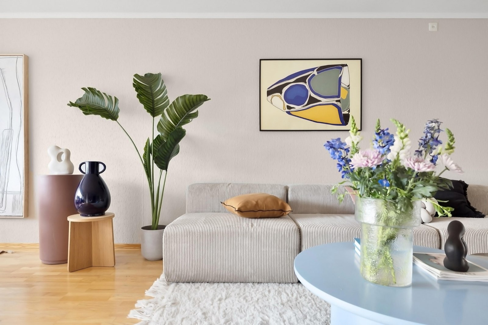
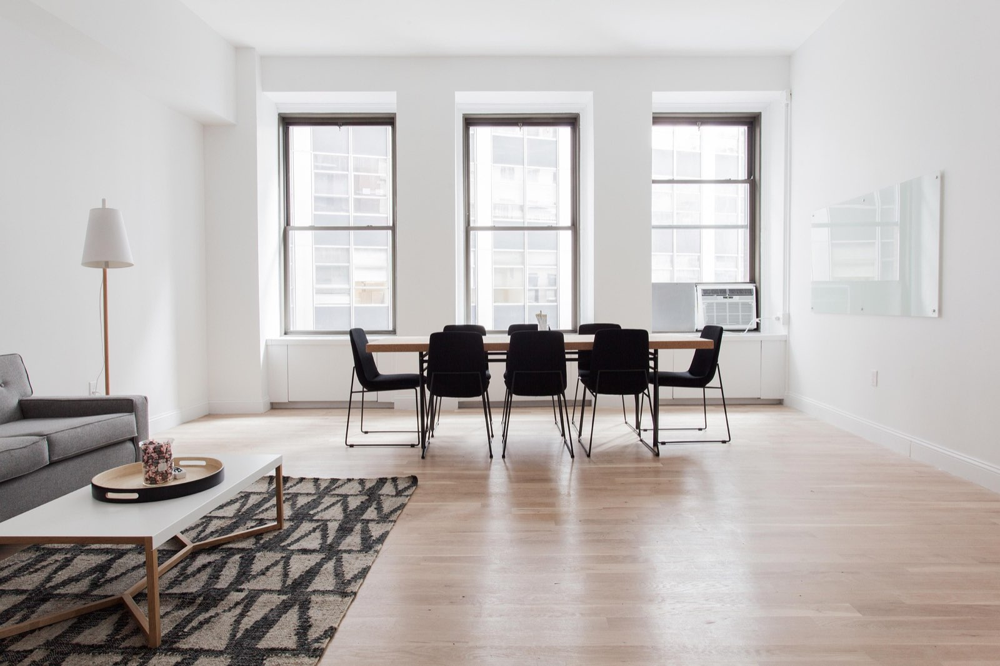
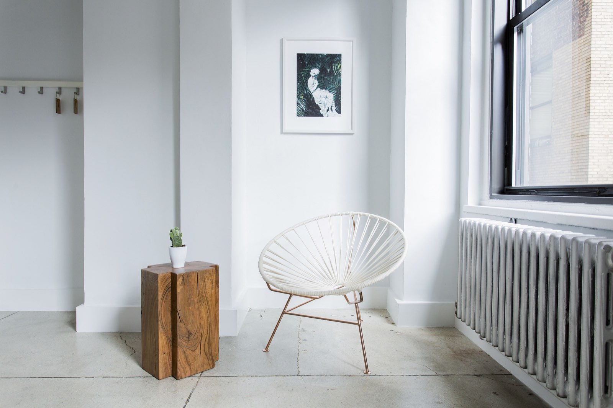

El enlace de acceso no es válido o ya se usó. Los enlaces caducan y solo sirven una vez: pide uno nuevo.
Accede a tu cuenta
Entra con el email de tu cuenta Mobau. Te enviamos un enlace de acceso, sin contraseña.
Enlace solicitado
Si existe una cuenta Mobau con este email, te llegará un enlace de acceso. ¿No tienes cuenta? Crea una.
Ábrelo en este mismo navegador. Si no lo ves en unos minutos, revisa la carpeta de spam.
Iniciando sesión…
Un momento, estamos comprobando tu enlace de acceso.
Ya iniciaste sesión
Estás conectado como .
Sesión iniciada
No encontramos tu selección temporal en este navegador. Puede que la hayas creado en otra pestaña o en otro dispositivo.
¿No tienes cuenta? Crear cuenta
¿Eres distribuidor? Muestra tu catálogo en Mobau →
Del producto a la solicitud, con la información en orden
Mobau es una plataforma de diseño para arquitectos e interioristas: reúne productos de distintas categorías y te ayuda a llevar cada referencia hasta el distribuidor. Estamos en fase piloto.

Descubre productos con su información técnica
Explora productos de distintas categorías y consulta en cada ficha lo que necesitas para especificar: medidas, materiales, acabados y la documentación que aporte el distribuidor.

Organiza referencias, cantidades y unidades
Reúne en Mi selección los productos de cada espacio y ajusta cantidades y unidades: m² para revestimientos, ud. para el resto. Revísalo todo antes de llevarlo a un proyecto.

Solicita cotizaciones más claras
Convierte tu selección en una solicitud de cotización con referencias, cantidades, unidades y tus datos de contacto, lista para enviar al distribuidor.
Durante el piloto no se realiza ningún cobro en la web.
¿Eres distribuidor? Muestra tu catálogo en Mobau →